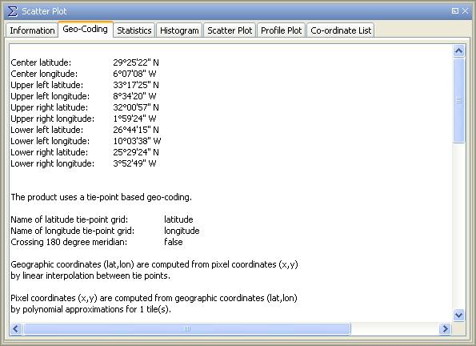

| Geo-Coding Information | |
This dialog shows the geo-coding information for the selected data product. Geo-coding enables DAT to transform pixel co-ordinates to geographical co-ordinates (WGS-84 datum) and vice versa. Geo-coding can be either based on a map projection (product is geo-referenced) or based on tie point grids (product is geo-coded). If a product is not geo-referenced, DAT uses the tie point grids "latitude" and "longitude" for geo-coding.
For tie point grid based geo-coding, the transformation of a geographical co-ordinate to a pixel position is more complicated than the other way round. DAT uses either an iterative algorithm or a polynomial approximation depending on the root mean square error (RMSE) of the approximation. If the RMSE is underneath half a pixel, the approximation is used instead of the iteration because the latter can sometimes have no clear attraction point and would yield to infinite looping.
Note: A mouse right-click within the geo-coding information area brings up a context menu with the item Copy data to clipboard. This will copy the diagram data as tabulated text to the system clipboard. The copied text can then be pasted directly into a spreadsheet application (e.g. Microsoft® Excel).
